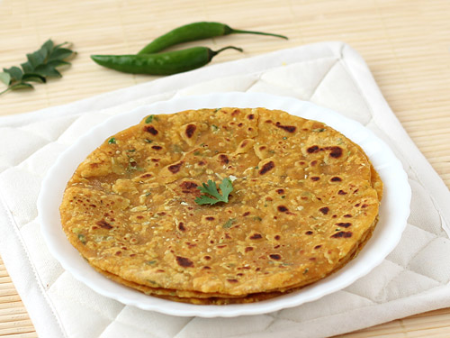

1.Vegetables (finely chopped/grated) - 1/4 cup (Mix of cabbage, carrot, capsicum, corn etc.)
2.Onion - 1/4 cup (finely chopped)
3.Coriander leaves (Cilantro) - 1/4 cup (finely chopped)
4.Wheat flour - 4 cups
5.Cream - 1/4 cup
6.Yogurt - 1/4 cup
7.Ginger-garlic-green chili paste - 1 tsp
8.Turmeric powder - 1/4 tsp
9.Asafoetida - a pinch
10.Red chili powder, Amchur powder, Black salt, Garam masala - 1/4 tsp each (or to taste)
11.Salt - 1 tsp
12.Oil - 2 tbsp
13.Ghee/oil - for making the parathas
Take finely chopped vegetables of your choice in a large mixing bowl.
Add all the remaining ingredients and mix well. The masalas can be added as per your taste.
Knead well to form a stiff dough. Add water little by little.
Divide into equal portions and make parathas just like you make regular rotis. Use ghee or oil as per your choice.